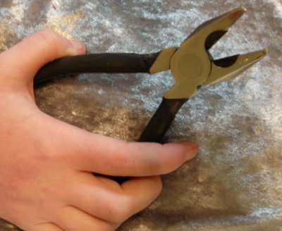
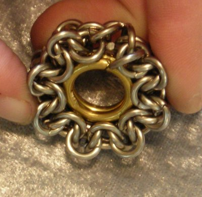
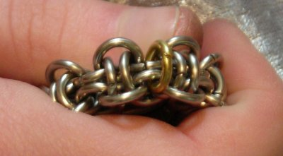

Constructing Hoodoo Pendants
a.k.a. Compass Rose / Sunburst / etc.
This tutorial explains how to make my favorite pendant, the Compass Rose. It is a tricky bugger to make, so I’ve tried to be as helpful as possible as far as hints and tricks go.The only ring size combination I’ve used (since the piece is perfectly sized for a pendant) is:
16 ga 3/16” ID (0.064” WD, 0.2055” ID)
12 ga 7/16” ID (0.100” WD, 0.474” ID)
Note that the design is very sensitive to variations in ring size. (Seriously – the difference between TRL’s machine cut 16316 Stainless and my hand-cut of the same equals the difference between a pendant that works and one that doesn’t. Why do you think I bothered with caliper measurements?)
Advice #1: Be wary of gauge systems, because AWG vs SWG will throw you for a loop. I tried doing one of these in 16 ga 3/16” sterling silver, but since sterling is non-ferrous and goes by a different gauge system than stainless, my actual wire diameter was a full 0.013” too small. Be sure you know your rings’ actual stats before you try using them for this project.
Advice #2: If you’re going to do this in a tough metal (say, stainless, as used in this tutorial), get yourself the proper pliers. I recommend:
| a set of 8” linesman’s pliers like these… | …a smallish pair of chain-nose pliers, with a good solid grip… |
|  | |
| …and (my favorites) some 4” bent-nose pliers with serrated jaws. | |
On the other hand, don’t go out of your way to do what I say – these are just recommendations, and you’ll probably want to go with what’s most comfortable to you.
Right. On to making the pendant.
1. Pre-close eight rings, 16 ga 3/16” in stainless (or whatever metal you want for the main body of your pendant).
2. Connect these eight into a simple 1-1-1 chain totaling 15 rings (you only need 7 open rings).
3. Make a second chain of the same dimensions, same metal. Lay them next to each other as shown. Pay close attention two how the leftmost rings of each chain line up: each should be leaning away from the other. The next two should be leaning toward each other.
4. Now you are ready to start connecting the two chains into a single chain of Hoodoo. If you aren’t familiar with making Hoodoo in this manner (shame on you! :P) have a look at this tutorial, steps 2-4.
Advice #3: If you have trouble accessing the rings down the center, now would be a good time to make use of those serrated bent-nose pliers. They have a good small nose, but they also grip the rings exceedingly well. Also, if you can’t get good leverage to bend the rings, brace your knuckles against your thighs. Your leg muscles are much stronger than your wrist muscles, and chances are they aren’t doing much at the moment, so you may as well make use of them.
5. Get the full length of your two chains converted into Hoodoo like so.
6. We interrupt this program for a brief advertisement.
Advice #4: TRL’s machine cut stainless (used here) makes a pretty borderline tight pendant. So, I sometimes throw in a ring or two of an *ever* so slightly larger diameter, which is usually enough to ease things up. By “slightly” larger, I mean a difference of maybe 0.01”, or less than 1/64” – small enough that there will be virtually no visual difference. How do you get so fine a distinction? Even something so small as machine cut vs hand cut can do it. If that isn’t an option for you, it probably wouldn’t hurt to just use a couple rings of 13/64” ID instead of 3/16”.
Right. With that in mind, at this point I normally check to see if I’m going to need to add in any rings of larger ID. So, curl the chain around in a circle, straighten out any wonky rings, and see if you can make the end rings come within a millimeter or two of touching. Don’t be afraid to strain it – stainless is tough. It can take it. For best results, the final piece needs to be under some tension anyway.
Looks like I get to use all one ring size on this one. (The end rings would come closer if I didn’t need my other hand for camera operation.)
7. Straighten the chain out again and add two rings, one onto each end. If the chain passed the 1-2 mm test, good on you, and use the regular 16 3/16” rings. If it looked like it would be too much of a strain to make the ends touch, then you might want to go with the rings of slightly larger diameter.
8. Right. At this point, you’ve put together 46 rings out of 58 total that you will end up needing. Only two remain in this size and metal. But those last two rings will be the worst utter bloody heck you could ever dream of. If this is your first try, don’t be surprised if you spend at least five or ten minutes on the next few steps. (er…wait, I’m trying to be encouraging here… Maybe you’ll get lucky – it is altogether feasible that your rings will have enough deviance from mine that they will go together perfectly. :D)
So, get an open ring ready and grab those toothed bent-nose. Ease the ring through one of the end rings and the last center ring as shown:
9. Now bring the chain around in a circle. (This would be a good time to skim ahead for a look at Advice #5.)
Mmkay? Now, your open ring will go through two rings on the other end, just like the ones it already has. If you get confused, try looking at the rings around it to see how the pattern works. This seam is a continuous piece of the rest of the chain.
Getting this ring into place will probably take a little horsing around, but it shouldn’t be *all* that hard. Just remember that you shouldn’t be afraid to stress the chain a little. If it really gives you a tough time, try the larger-ID rings.
Advice #5: When you bring the chain around in a circle, notice how some rings slant out on the inner edge (blue on pic below) and others slant out at the perimeter (green). Try to make your open ring one of the ones that slants out at the perimeter, because it will be much easier to access that way. If you do it that way, your open ring will look just like these pictures.
10. Time to get out those 12 ga 7/16” rings. Close them and wrestle them into place, captured in the center of the circle. (Nothing holds these rings in place except the edges of the rings around them, which form a bit of a rim on either side. This is the main reason that it is so important to have the chain very stiff – if the finished pendant can flex, these center rings can fall out even after you close off the chain.)
Advice #6: The size of these center rings can be just as delicate as that of the stainless ones around them. You may need to tweak their diameter by trimming a bit off one end – like the kerf from a saw. Try taking maybe 1-2mm. Oh, and with that there’s one silly mistake that is really easy to make, so I’ll caution you here before you discover it for yourself. If your rings are shear-cut (as in aviation snips, cable cutters, machine cut, etc) and you use shear cutters to do this trimming, watch the notch on the top of the cut! Don’t cut so that you get that notch on both sides. If the descending jaw on your cutters is on the left, then that notch should be on the left as well. Otherwise, instead of a cut like --\\-- you will have one like --/\--.
You’ll then have to correct the ring back to a circle. It doesn’t have to be a perfect circle, but get it reasonably close.
11. Almost done! but now we’re ready to face the biggest durn bear in the whole durn forest. The last ring is the one opposite the ring from Steps 8-9, which will complete the joint between the two ends of the chain. Start by putting it through those two rings on the right (one center ring, one on the edge)…

…and now, give it all hell until it goes through the mirror rings on the left. Yeah, in stainless, it pretty much takes all hell to get it through. When you get it, you’ll have this really satisfying sensation of “Hah! I WIN! Take that, you sucker rings! Who’s your daddy? Who’s your daddy? Hahahahaha!!!”…or, you know, maybe not that extreme.
Close that ring once you get it through all four. Don’t slip&jab yourself. Use toothed pliers.
12. Okay, after that, you deserve a nice, easy finish. These last eight rings are under almost no stress whatsoever, meaning that they are pretty easy to get into place. They are the peripheral rings that serve as the points of the compass (or the rays of the sunburst, or the spokes of the Wheel of Life, or…you get the idea).

Once you’ve got the basic form, you can do any number of variations. Replace four of the brass rings with copper, and you get cardinal points:
I fancy, if done in red and pink Anodized Aluminum, it could be made to look like a rose. In Bright Aluminum and Blue AA, if one could tweak the sizes to fit a six-pointed configuration, it might make a nice snowflake.
Then there’s the option of inverting the peripheral rings, an idea which I’ve played with a bit. Looks really geometric:
Fellow mailler Kim Lechner has created a stunning precious metals version of the pendant with a Swarovski crystal cosmic ring as the centerpiece, which (with her permission) I simply have to share. She notes, however, that the crystal is prone to falling out and will need to be glued or otherwise secured.
Feel free to contact me if you have made your own version of this pendant and would like to see it displayed here.
Anyway, Hoodoo pendants are funnnnnn…